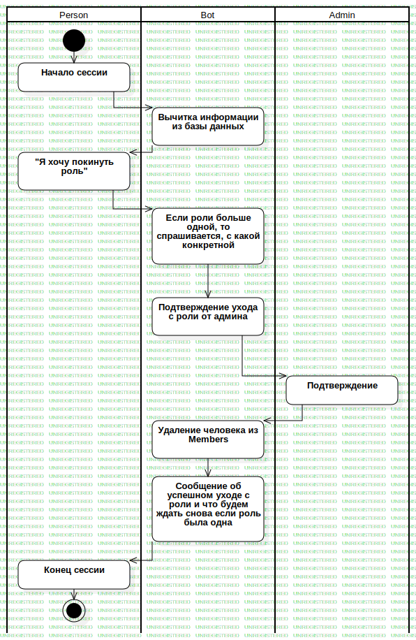

Leaving
UMLActivity
AskBot
::
Business Processes
::
Leaving
Description
none
Diagrams

Leaving
Groups
Person
Bot
Admin
Nodes
InitialNode1
Если роли больше одной, то спрашивается, с какой конкретной
Подтверждение ухода с роли от админа
Action1
Подтверждение
Удаление человека из Members
Сообщение об успешном уходе с роли и что будем ждать снова если роль была одна
ActivityFinalNode1
ActivityFinalNode2
Edges
(InitialNode1→Начало сессии)
(Начало сессии→Вычитка информации из базы данных)
(Вычитка информации из базы данных→"Я хочу покинуть роль")
("Я хочу покинуть роль"→Если роли больше одной, то спрашивается, с какой конкретной)
(Если роли больше одной, то спрашивается, с какой конкретной→Подтверждение ухода с роли от админа)
(Подтверждение ухода с роли от админа→Подтверждение)
(Подтверждение→Удаление человека из Members)
(Удаление человека из Members→Сообщение об успешном уходе с роли и что будем ждать снова если роль была одна)
(Сообщение об успешном уходе с роли и что будем ждать снова если роль была одна→Конец сессии)
(Конец сессии→ActivityFinalNode2)
Properties
Name
Value
name
Leaving
stereotype
null
visibility
public
isReentrant
true
isReadOnly
false
isSingleExecution
false
Owned Elements
Leaving